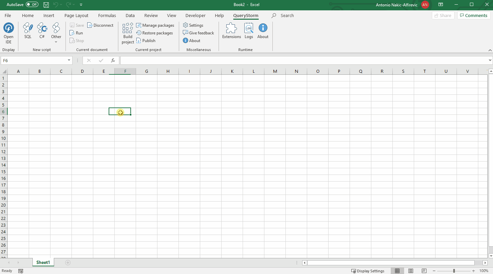

Excel functions via SQL
QueryStorm allows creating Excel functions that use SQL to return data from a database. The body of the function is written in SQL, while the declaration of the function uses a preprocessor syntax that's specific to QueryStorm.
Suppose we'd like to define a function that returns a list of people from the database whose first name contains a specified search term.
To define this function, we need to create a new script and connect to our target database. Once connected, we can use the following code to define and test the function:
1 2 3 4 5 6 7 8 9 10 | |
We can run the code to examine if it returns the expected results. When running the query, the @searchTerm parameter's default value will be used. In this example, the query will return all persons whose name contains the string "tim".
Running the code simply runs the query, but does not yet register the function with Excel. To register this function with Excel, we must:
- Save the script Ctrl+S
- Build the project Ctrl+Shift+B
For a video demonstration of the process, click below:
Parameters
Functions that are declared by the QueryStorm preprocessor can accept parameters. Function parameters have names, types, and default values. There are five supported data types for parameters: int, float, datetime, string, and bool.
The following are examples of valid parameter declarations:
int abc = 123float abc = 12.3datetime abc = "2020-08-31"(ISO 8601 format)string abc = "some text"bool abc = truevar abc = "example text"(auto-detect type)
To reference a variable in the body of the SQL query, you can either use preprocessor expressions e.g. {abc} or the standard syntax for parameters, e.g. @abc (for SQL Server).
A parameter's default value is only used when the query is directly executed. When the function is called from Excel, the default value of the parameter is ignored.
Return values
Functions can return a single value or an entire table as their result.
If your machine (or the end user's machine) is running one of the newer (Office365) versions of Excel that support dynamic arrays, tabular results will automatically spill.

If you are using an older version of Excel, you will need to use Ctrl+Alt+Enter (or
{=function()}syntax) to allow the result to return a table of data (however, you'll need to know in advance the size of the output data).
Using and sharing functions
So once you've built the function, where can you use it? It depends on where you've created it. Functions can be defined inside a particular workbook or as a QueryStorm extension that's available in all workbooks.
Workbook functions
If the function is stored inside the workbook, anyone who has the workbook (and the QueryStorm runtime) will be able to use it. However, this function will only be usable in the workbook that contains it. If the function should be usable in any Excel file, you should define it in an "Extension" package, as described below.
Extension functions
QueryStorm supports building extension projects which can contain a set of user-defined Excel functions that can be packaged together and published to other users.
To define the function in a QueryStorm extension rather than in the workbook, create a new project in "Code explorer" and then add a new script from the context menu of the new project.
For a video demonstration of this process, click below:
Publishing functions
Functions that are defined in extension projects can be published to other QueryStorm (Runtime) users. For more information on this, click here.